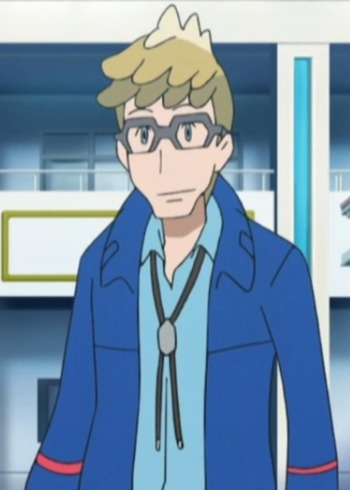

Kousuke Kuwano is a Japanese voice actor.
- Gender: Male
- Birthday: October 16, 1990
- Hometown: Hyogo, Japan

|
|---|
|
Kousuke Kuwano is a Japanese voice actor.
|
|---|
|  | Molayne | Pokemon Sun and Moon | Molayne is a Pokemon Trainer who specializes in Steel-type Pokemon. He is a friend of Professor Kukui and cousin to Sophocles. He tend to keep to himself and is notably cautious. He will go out of his way to help a friend. His ingenuity and extensive knowledge on space is respected. |
Go Back to Main Page |
Go Back to Homepage |
|
|
|
OR |
|